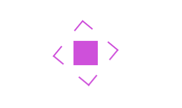

Latest project

Results-driven Software Analyst with 3 years of experience in analyzing, designing, and optimizing software solutions to align with business objectives. Skilled in gathering requirements, system evaluation, troubleshooting, and process automation to enhance software functionality. Experienced in working closely with developers, testers, and stakeholders to ensure seamless software integration and performance. Committed to continuous learning and adopting new technologies to enhance development processes. Willingness to stay updated with the latest trends, technologies, and best practices through self-learning, online courses, workshops, and community participation. Strong understanding of SDLC, Agile methodologies, and database management to drive efficiency and innovation.
More about me
Developed by Kunal Dhuri 2024